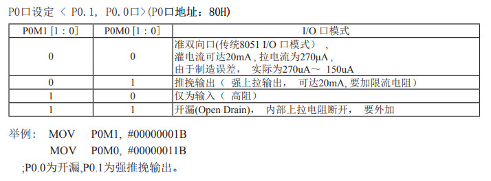
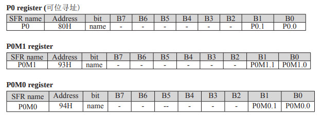
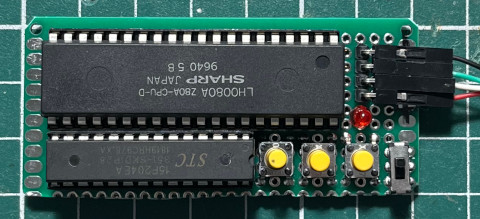
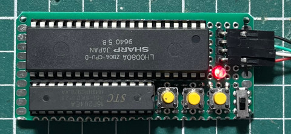

參考資訊：
https://www.stcmicro.com/datasheet/STC15F204EA-cn.pdf
Register


.org 0h
jmp _start
.org 100h
_start:
setb p0.0
call delay_1s
clr p0.0
call delay_1s
jmp _start
; 1t + ((1t + (4t * 250) + 4t) * 200t) + 4t = 201005t
; 11.0592MHz = 0.09042us
; 201005t * 0.09042us = 18175us
delay_18ms:
mov r7, #200
d0:
mov r6, #250
d1:
djnz r6, d1
djnz r7, d0
ret
; 1t + ((4t + 201005t + 4t) * 55) + 4t = 11055720t
; 11055720t * 0.09042us = 999658us ~= 1s
delay_1s:
mov r5, #55
d2:
call delay_18ms
djnz r5, d2
ret
.end
編譯、燒錄
$ mcu8051ide --compile main.s
$ sudo stcgal -p /dev/ttyUSB0 -l 9600 -b 9600 -t 11059 main.hex
Waiting for MCU, please cycle power: done
Protocol detected: stc15a
Target model:
Name: STC15F204EA
Magic: F394
Code flash: 4.0 KB
EEPROM flash: 1.0 KB
Target frequency: 11.059 MHz
Target BSL version: 6.7R
Target options:
reset_pin_enabled=False
watchdog_por_enabled=False
watchdog_stop_idle=True
watchdog_prescale=256
low_voltage_reset=True
low_voltage_threshold=4
eeprom_lvd_inhibit=True
eeprom_erase_enabled=False
bsl_pindetect_enabled=False
Loading flash: 284 bytes (Intel HEX)
Trimming frequency: 11.059 MHz
Switching to 9600 baud: done
Erasing 2 blocks: done
Writing flash: 576 Bytes [00:00, 755.67 Bytes/s]
Finishing write: done
Setting options: done
Target UID: F39444AF01C2FD
Disconnected!
完成

